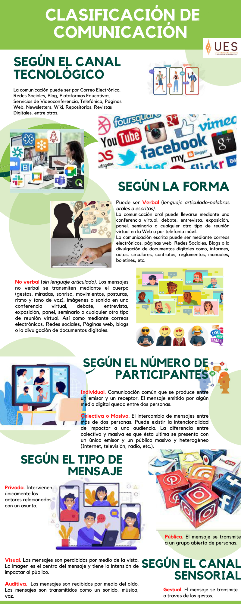
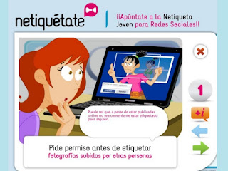
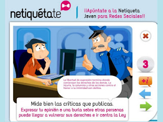
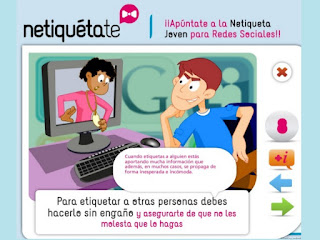

Las herramientas digitales puestas a nuestra disposición en internet permiten la Comunicación Digital, es decir, el intercambio de información, ideas y conocimiento en línea que puede llevarse a cabo en un momento y espacio, mediante una amplia gama de canales online (contexto multicanal) y con diversos significados (contexto multinivel), y varias formas de participación (unilateral, recíproca).
Tomando como base el post de Nagore García (2019), la comunicación se clasifica en varios tipos.

Reglas de comportamiento para Comunicación Digital
La evolución tecnológica ha propiciado que cambien las audiencias que tradicionalmente existían y que se utilicen distintas reglas de comportamientos (Netiquetas) para aportar seguridad y humanidad cuando se lleve a cabo la comunicación en espacios virtuales como redes sociales, sitios web, chats, blogs, foros de discusión, correos electrónicos, etc. Estas reglas son importantes para evitar problemas y permitir una convivencia cibernética más segura, confiable y agradable.

.

- 10 Netiquette Guidelines Online Students Need to Know
- Ejemplo de Netiqueta
- Netiqueta paso a paso
- Netiqueta joven para redes sociales
- Netiquette Social Media
- Netiquette Rules
- Tonos de comunicación en las redes sociales, el blog y el sitio Web. Guía comunicación digital con ejemplos + Infografía
Páginas Web, Blogs, Redes sociales, etc.
Lenguaje articulado (palabras orales o escritas).
Sin Lenguaje articulado.
Puede convertirse en Interindividual cuando se comunican ya sea verbal o no verbal y expresan sentimientos.,
Intervienen únicamente los actores relacionados con un asunto.
El mensaje se transmite a un grupo abierto de personas.
Los mensajes son percibidos por medio de la vista.
Los mensajes son recibidos por medio del oído.
No existe una retroalimentación entre emisor y receptor.
Hay un intercambio de roles entre emisor y receptor, se presenta la retroalimentación).